Página I Taller UAX 2003
Avanzadilla del taller:
Mostramos dos documentos, el primero contiene las preguntas mas habituales sobre el robot Tritt, el mas comun a la hora de impartir talleres. El
segundo contiene una seleccion de las transparencias basicas del taller.
Faq del Microbot Tritt
Transparencias para el taller
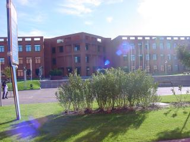
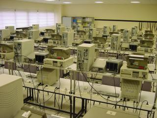
Primer dia:
Hoy se ha comenzado con las presentaciones, repartos de material y objetivos del taller, para rapidamente meternos en materia
con la estructura mecanica. Se ha enseñado el proceso para desmontar los motores del robot,
en concreto los Futaba S3003. Una vez desmontados y probados se ha procedido a armar la estructura. En este caso
se han utilizado piezas de Lego sencillas, varillas roscadas y tuercas. Bastante simple.
Los enlaces relacionados donde se muestra toda esta informacion
Cuaderno tecnico II
Cuaderno tecnico III
Robot Tritt
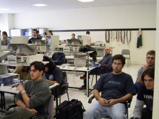
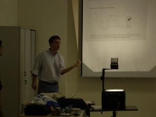
Segundo dia
Hoy hemos explicado como conectar los sensores de infrarrojos al robot, la experiencia ha sido dura, sobretodo por el tema de las
soldaduras. Una vez listos los motores y los sensores hemos terminado de montar la estructura del robot.
Las primeras pruebas de software las hemos realizado con el programa CT294 y con el LiveCD. La experiencia ha ido bien, pero en algunos PCs no ha sido tan bonito,
demasiado lentos pare el mundo actual. En esos no queda mas remedio que usar MSDOS :-(
Los enlaces relacionados donde se muestra toda esta informacion
Tarjeta CT293+
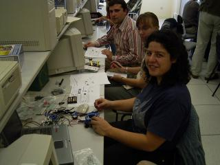
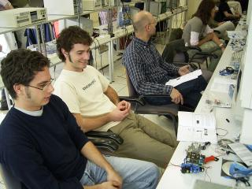
Tercer dia
Hoy se ha empezado con la programacion. Se han utilizado dos entornos distintos, uno basado en un LiveCD de Linux, basado en Metadistros. Y otro
con ordenadores en MSDOS. El software y la distribucion de directorios se ha mantenido igual en los dos sistemas, de forma que la explicacion ha servido para ambas.
El software utilizado (las cttools) esta disponible en: CTTOOLS
Tambien se puede encontrar todo el software necesario (linux y ms-dos), en la pagina de la CT6811, ademas de muchisimos ejemplos:
CT6811
Toda la informacion de como se programa el 68HC11 esta en el libro: Libro CT6811
Los programas de ejemplo que se han visto son:
ledp.asm (lo han tenido que cargar en la ram y grabar en la eeprom):
ASM
S19
delay.asm, (lo han tenido que modificar para hacer que tritt avance en linea recta durante un rato, gire a la derecha y lo repita todo otra vez.
ASM
S19
Para la gente que use Windows XP, y anteriores versiones, el software que se utiliza es el CTLOAD para windows, que permite cargar en ram, grabar en eeprom y la
misma funcionalidad del programa ct294: CTLOAD.ZIP
Las fuentes se encuentran en:CTLOAD.SRC
( El CTLOAD para Windows ha sido programado por Javier de Lope y puesto ha disposicion del publico con licencia GPL ).
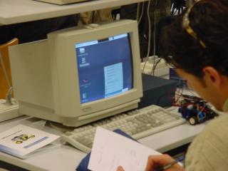
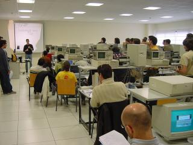
Cuarto dia
Hoy ha sido el segundo dia de programacion, y se ha estado resolviendo bastantes dudas. En algunos momentos hemos estado desbordados por la gente. Esperamos que los participantes sean comprensivos en el caso de
haber dejado alguna duda sin resolver.
Los programas sobre los que se ha trabajado han sido:
Programa para que Tritt siga la linea negra, lo han tenido que adaptar a su robot: Tritt-ram.asm
Circuito de pruebas para Tritt, en pdf. Se imprime en una hoja dina4 (con impresora Laser) y sirve para hacer pruebas:
Circuito
Tambien se han explicado las reglas del concurso del viernes, "El Mogollon".
Objetivo:
2. Vivir en vivo un concurso de robots.
3. Ganan los tres primeros robots que consigan salir de un recinto cerrado.
Reglas:
1. Todos los participantes partiran del centro del recinto.
2. La posicion de salida se sorteara previamente al concurso.
3. Todos los robots saldran en la misma direccion, pero se mantendra en secreto en relacion a la salida del recinto.
4. La salida del recinto se establece como una linea imaginaria entre dos puntos. Todo robot que la atraviese se considerara que ha salido del recinto pero solo si lo hace caminando de frente.
Es decir salir marcha atras no vale.
5. El jurado podra intervenir en ciertas ocasiones para poner orden dentro del recinto e incluso introducir de nuevo, algun robot que haya sido despedido del recinto.
Para dar mas emocion los participantes ya saben de que posicion van a seguir, de esa manera pueden pensar que algoritmo van a usar. Ademas hemos comentado que esta permitido ir a perder, o dicho de
otra forma, ir a molestar a los otros robots en lugar de buscar la salida del recinto.
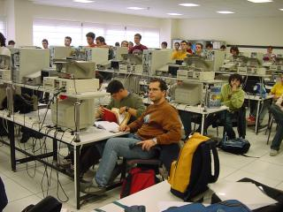
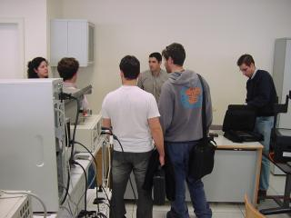
Quinto dia
Durante la primera hora la gente ha estado poniendo a punto sus robots, en la segunda se va ha celebrado el concurso.
Se ha permitido que la gente pudiese ver la construccion del recinto, pero no se les ha dicho la orientacion de salida.
Se ha mantenido en suspense hasta el final.
Al final, de los 36 grupos se han presentado 30 robots al concurso, de los cuales unos estaban mejor y otros peor, pero todos tuvieron su oportunidad. La salida fue conjunta en direccion contraria a la salida del recinto, era de imaginar, ¿ no ?
El primer participante tardo unos cinco minutos en salir, a partir de el , fueron saliendo poco a poco el resto. Durante el concurso hubo bajas, robots que perdieron las ruedas,
que agotaron sus baterias o simplemente que dejaron de funcionar. Esos robots no participaron en una segunda vuelta, no valida para puntuaciones, pero si para ver a los mejores en accion.
Al final pasamos un rato divertido.
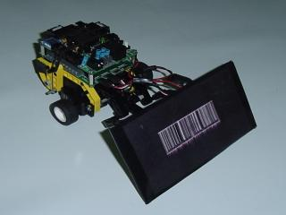
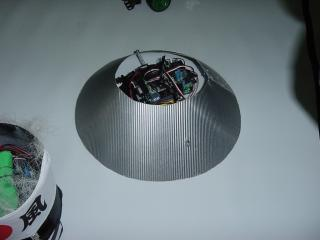
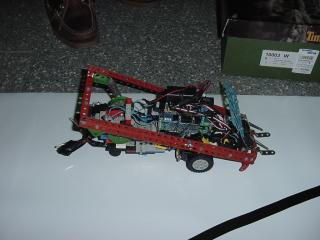
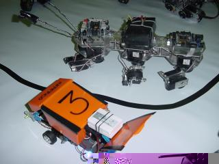
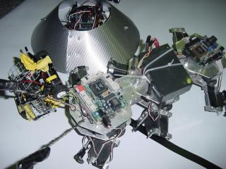
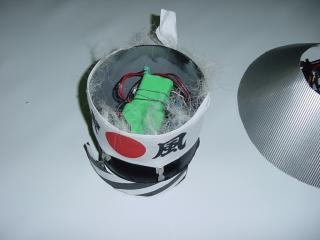
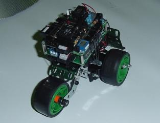
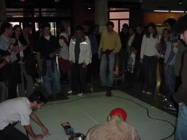
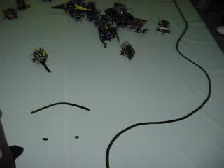
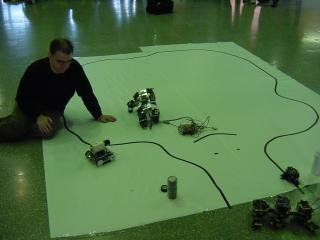
Profesores
Juan Gonzalez Gomez: Ingeniero de Telecomunicacion y Profesor Asociado en la Universidad Autonoma de Madrid. ( Pagina personal )
Andres Prieto-Moreno Torres: Ingeniero de Telecomunicacion y trabaja en Ifara Tecnologias . ( Pagina personal )
Joaquin Moreno Mateos: Ingeniero Industrial y trabaja en Ifara Tecnologias .
Organiza
Rama de Estudiantes del IEEE de la Universidad Alfonso X el Sabio.
Pagina web
Miguel Angel Simon coordinador y nexo de union en el evento.
Adolfo Abalo: Presidente de la asociacion.
Alejandro Somozas: Coordinador Rama de Robotica de la asociacion
Agradecimientos
A todos y cada uno de los asistentes al taller.
A la Rama de estudiantes del IEEE por toda la organizacion.
A la Universidad Alfonso X el Sabio por permitir celebrar el taller.